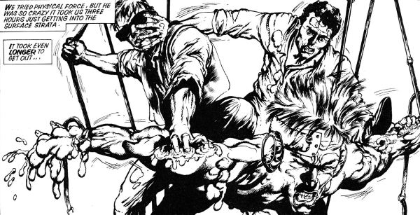

A pair of Indigo Prime operatives that we first meet under contract to Tyranny Rex: their tales are densely baffling and often structured to deliberately bring into question their own veracity.
Art by Will Simpson
| Story Title | Parts | Pages | w indicates a wraparound coverCovers | Year(s) | Issues | Writer | Artist | Colourist | Letterer |
|---|---|---|---|---|---|---|---|---|---|
From Tyranny RexSoft Bodies | 5 | 22 | 597: Jim McCarthy 1 | 1988 | Reprints: X21595-598, 604 | John Smith Chris Standleyvarious | Will Simpson | [b&w] | Gordon Robson: 1‑4 Steve Potter: 5 various |
Linked to Indigo PrimeThe Issigri Variations | 8 | 43 | 0 | 1989 | 642-649 | John Smith | Mike Hadley | [b&w] | Gordon Robson |
Linked to Indigo PrimeHoliday on Ice | 1 | 10 | 0 | 1990 | WS3 | John Smith | Mike Hadley | <-- | Gordon Robson |
| >> Posters << | |||||||||
Linked to Indigo Prime Star Scan.[Fervent & Lobe] | 1 | 1 | 0 | 1989 | 648 | n/a | Mike Hadley | <-- | n/a |
| year | episodes | pages |
| 1979 | 0 | 0 |
| 1980 | 0 | 0 |
| 1981 | 0 | 0 |
| 1982 | 0 | 0 |
| 1983 | 0 | 0 |
| 1984 | 0 | 0 |
| 1985 | 0 | 0 |
| 1986 | 0 | 0 |
| 1987 | 0 | 0 |
| 1988 | 5 | 22 |
| 1989 | 8 | 43 |
| 1990 | 1 | 10 |
| 1991 | 0 | 0 |
| 1992 | 0 | 0 |
| 1993 | 0 | 0 |
| 1994 | 0 | 0 |
| 1995 | 0 | 0 |
| 1996 | 0 | 0 |
| 1997 | 0 | 0 |
| 1998 | 0 | 0 |
| 1999 | 0 | 0 |
Comic strip data (excludes other content):